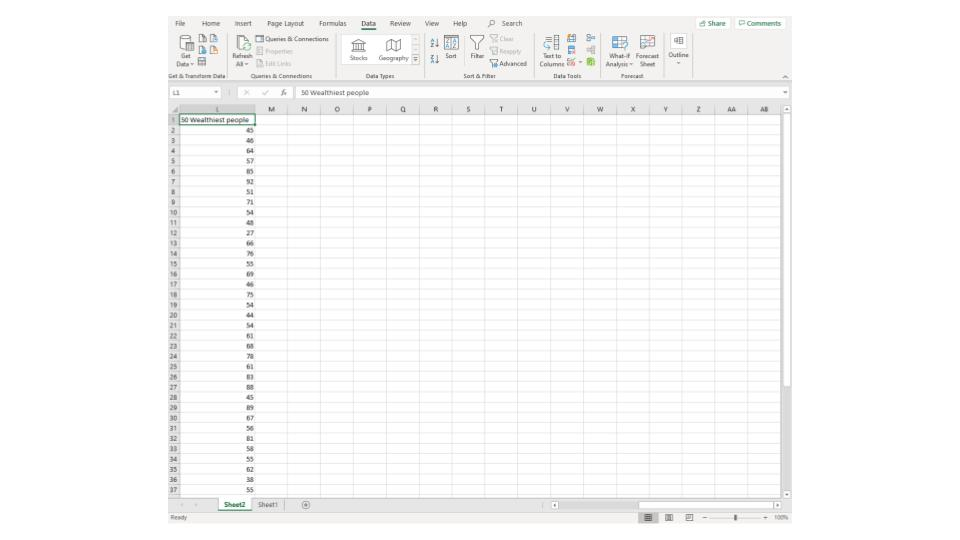
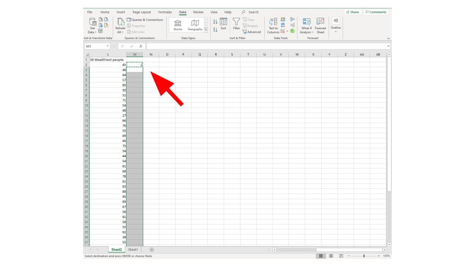
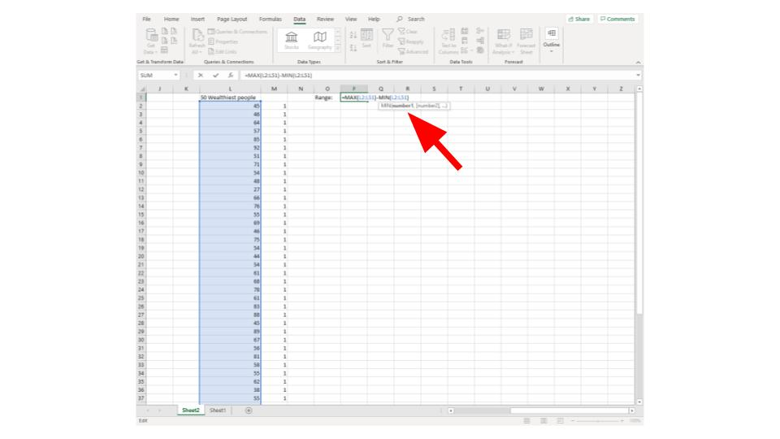
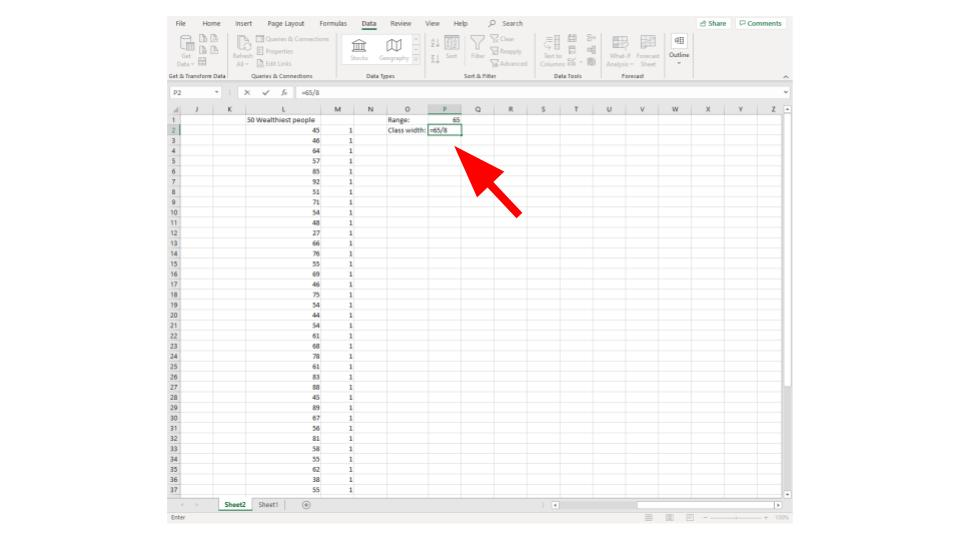
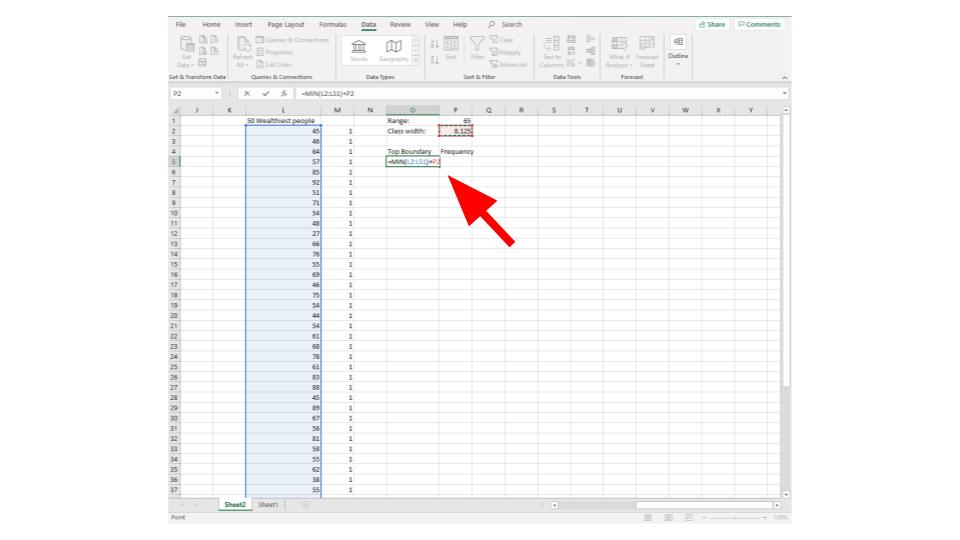
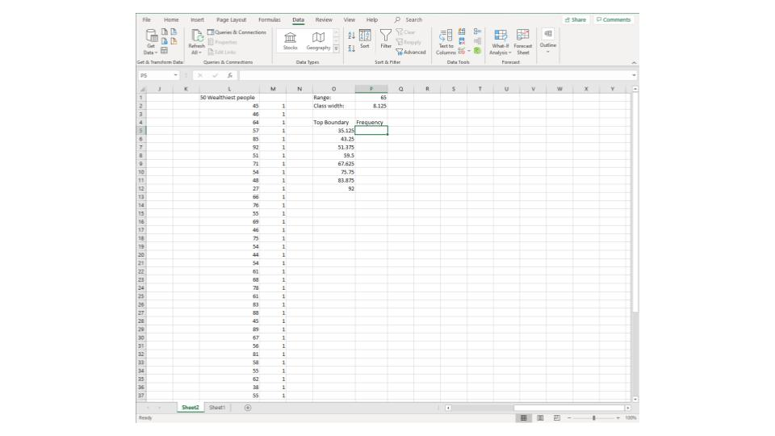
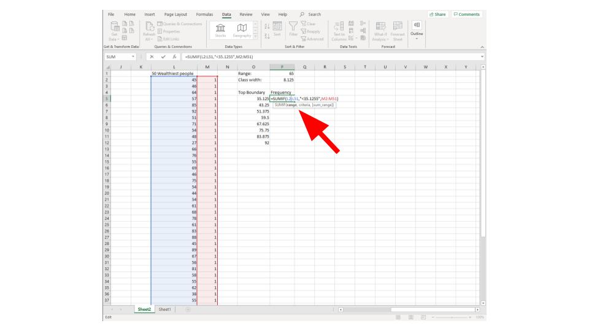
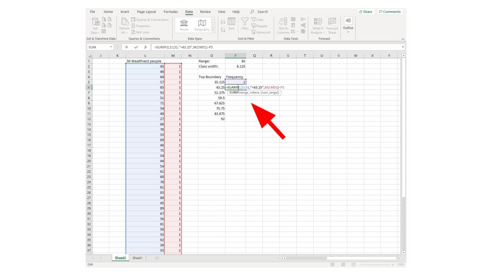
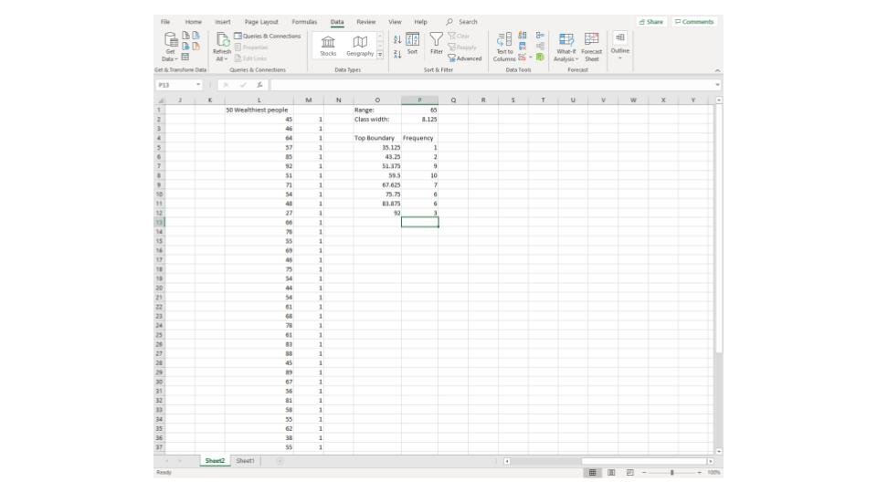

Excel Example
Frequency Table
(Quantitative Data)
Step 1: Enter your data

Step 2: Create a row of 1's next to your data (this is how we will count them in the future) you can do this by typing one in a single cell then copying (CTRL+C) and pasting (CTRL+V) in the rest of the rows

Step 3: Calculate the Range by using the formula
=MAX([Range of Data])-MIN([Range of Data])
you can enter [Range of Data] by clicking and dragging

Step 4: Find class width by taking the range and dividing it by the number of desired classes (in this example it is 8)
\[=\dfrac{\text{Range}}{\text{number of classes}}\]

Step 5: Create your rows by making the top boundary first adding the smallest number to the number from step 5, then by adding the previous number to the class width and so on


Step 6: To calculate the first frequency enter the formula
=SUMIF([Range of Data],"<(first bound)",[column of 1's])

Step 7: for the other rows enter the formula
=SUMIF([Range of Data],"<(bound)",[column of 1's])-SUM([Range of previous frequencies])

Step 8: Done!

To see this done watch the following video: